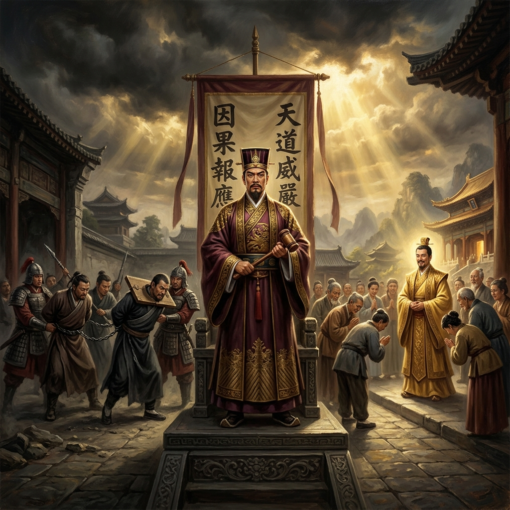
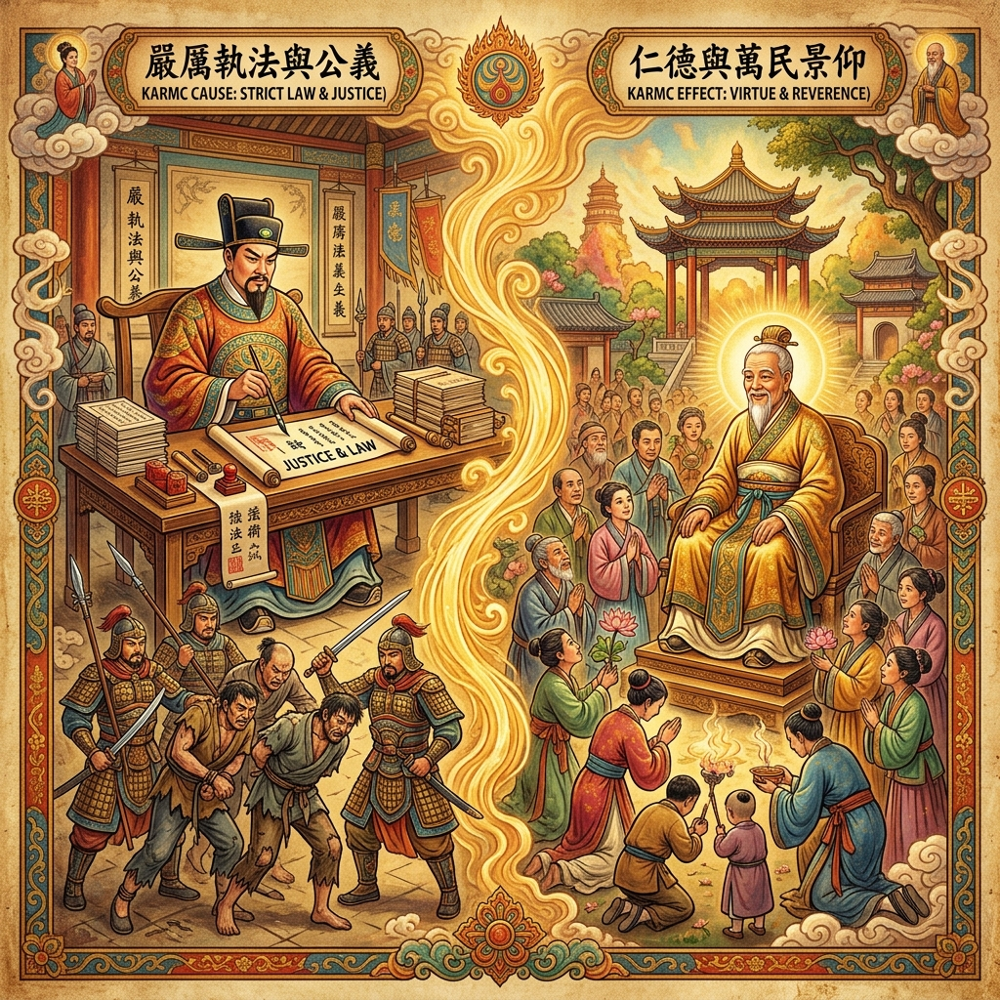
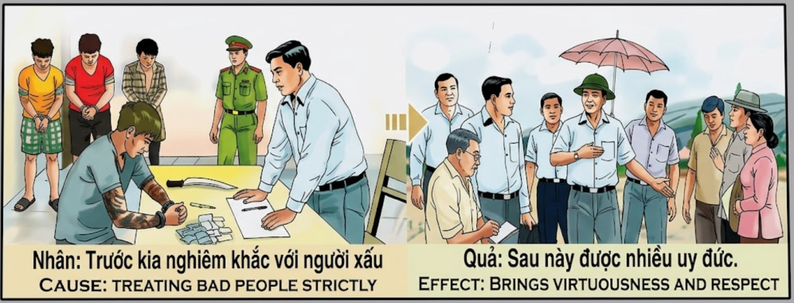

La Firmeza ante el MalFirmness against EvilFermezza contro il Male对恶的坚定الحزم في مواجهة الشرТвёрдость перед зломStandhaftigkeit gegen das BöseLa fermeté face au mal悪に対する毅然とした態度Firmeza contra o MalSự cứng rắn trước cái ác
Quien se yergue firme contra la maldad y no doblega su rectitud ante el poder del mal, cosecha en su próxima vida la virtud más alta y el respeto de todo un pueblo. He who stands firm against evil and does not bend his righteousness before the power of wickedness, reaps in his next life the highest virtue and the respect of an entire people. Chi si erge fermo contro la malvagità e non piega la propria rettitudine davanti al potere del male, raccoglie nella prossima vita la virtù più alta e il rispetto di un intero popolo. 面对邪恶坚定不屈、不在恶势力面前弯曲正义的人，将在来世收获最高的美德和整个民族的尊敬。 من يقف صامداً في وجه الشر ولا ينحني أمام قوة الأشرار، يحصد في حياته القادمة أعلى الفضائل واحترام شعب بأكمله. Тот, кто стоит твёрдо перед злом и не склоняет свою праведность перед силой порока, пожинает в следующей жизни высшую добродетель и уважение целого народа. Wer standhaft gegen das Böse steht und seine Rechtschaffenheit nicht vor der Macht des Übels beugt, erntet in seinem nächsten Leben die höchste Tugend und den Respekt eines ganzen Volkes. Celui qui se dresse fermement contre le mal et ne plie pas sa droiture devant la puissance de la méchanceté, récolte dans sa prochaine vie la plus haute vertu et le respect de tout un peuple. 悪に対して毅然と立ち向かい、邪悪の力の前に正義を曲げない者は、来世で最高の美徳と民衆の尊敬を得る。 Aquele que se mantém firme contra o mal e não dobra a sua retidão perante o poder da maldade, colhe na próxima vida a virtude mais elevada e o respeito de todo um povo. Người đứng vững trước cái ác và không khuất phục chính nghĩa trước sức mạnh của sự gian tà, sẽ gặt hái được đức hạnh cao nhất và sự kính trọng của cả một dân tộc trong kiếp sau.
En el tejido de la convivencia humana, existe un acto de valentía que pocos se atreven a sostener: la firmeza inquebrantable frente al mal. La maldad prospera cuando los justos callan, cuando el miedo doblega las voluntades honestas. Pero aquel que se atreve a mirar a los ojos del malhechor y pronunciar un «no» rotundo, está sembrando semillas de virtud que el universo custodiará con celo.
Ser estricto con los malvados no es crueldad, sino un acto supremo de compasión hacia las víctimas presentes y futuras. El juez que castiga al ladrón protege a los inocentes; el líder que confronta la corrupción salva a su pueblo del caos. La rectitud firme es el escudo invisible que sostiene el orden moral del mundo.
La ley kármica premia esta valentía con la moneda más valiosa: la autoridad moral. En la siguiente vuelta de la rueda, el alma que mantuvo su rectitud ante el mal renacerá investida de una virtud radiante. Su sola presencia inspirará respeto y reverencia. Los pueblos buscarán su consejo, las multitudes inclinarán la cabeza, porque el universo devuelve multiplicado el coraje de quien supo defender la justicia sin claudicar.
In the fabric of human coexistence, there is an act of courage that few dare to sustain: unwavering firmness in the face of evil. Wickedness thrives when the righteous remain silent, when fear bends honest wills. But whoever dares to look into the eyes of the wrongdoer and pronounce a resounding "no" is sowing seeds of virtue that the universe will guard with zeal.
Being strict with the wicked is not cruelty, but a supreme act of compassion toward present and future victims. The judge who punishes the thief protects the innocent; the leader who confronts corruption saves his people from chaos. Firm righteousness is the invisible shield that upholds the moral order of the world.
Karmic law rewards this courage with the most valuable currency: moral authority. At the next turn of the wheel, the soul that maintained its righteousness against evil will be reborn invested with radiant virtue. Their mere presence will inspire respect and reverence. Peoples will seek their counsel, crowds will bow their heads, because the universe returns multiplied the courage of those who knew how to defend justice without yielding.
Tra i tanti volti dell’abbondanza, c’è una prova silenziosa che molti non riescono a notare. Il denaro e le risorse non sono proprietà eterne, ma energia presa in prestito dall'universo per essere gestita. Chi trasforma quell'energia in fumo, bruciando la propria fortuna sull'altare del lusso eccessivo e della banale ostentazione, firma una sentenza di scarsità.
Essere severi con i malvagi non è crudeltà, ma un atto supremo di compassione verso le vittime presenti e future. Il giudice che punisce il ladro protegge gli innocenti; il leader che affronta la corruzione salva il suo popolo dal caos. La rettitudine ferma è lo scudo invisibile che sostiene l'ordine morale del mondo.
La legge karmica stabilisce un equilibrio incorruttibile: l'universo si appropria di ciò che non sa valorizzare o condividere. Al prossimo giro di ruota, l’anima che è stata spietatamente sprecata rinascerà all’estremità opposta dello spettro. Le sue tasche saranno piene di buchi, la miseria sarà la sua ombra costante, e l'opulenza che un tempo disprezzava diventerà un doloroso miraggio di fronte alla povertà più assoluta.
在人类共存的织锦中，有一种少有人敢于坚持的勇气：面对邪恶坚定不移。当正义之士沉默时，当恐惧屈服了诚实的意志时，邪恶就会蔓延。但敢于直视恶人的双眼并坚定地说"不"的人，正在播种宇宙将悉心守护的美德之种。
对恶人严厉并非残忍，而是对当前和未来受害者的最高慈悲。惩罚盗贼的法官保护了无辜者；对抗腐败的领导者从混乱中拯救了他的人民。坚定的正义是维护世界道德秩序的无形之盾。
因果法则以最宝贵的货币奖赏这种勇气：道德权威。在轮回的下一转，面对邪恶而保持正义的灵魂将重生为充满光辉美德的人。他们的存在本身就会激发尊敬和崇敬。人民将寻求他们的忠告，众人将俯首致敬，因为宇宙会成倍回报那些敢于捍卫正义而不屈服之人的勇气。
في نسيج التعايش البشري، هناك فعل شجاع قلّما يجرؤ أحد على التمسك به: الثبات الراسخ في مواجهة الشر. يزدهر الشر عندما يصمت الصالحون، عندما ينحني الخوف بالإرادة الصادقة. لكن من يجرؤ على النظر في عيني الظالم ويقول "لا" حازمة، فإنه يزرع بذور فضيلة يحرسها الكون بغيرة.
الحزم مع الأشرار ليس قسوة، بل هو أسمى أعمال الرحمة تجاه الضحايا الحاليين والمستقبليين. القاضي الذي يعاقب اللص يحمي الأبرياء؛ والقائد الذي يواجه الفساد ينقذ شعبه من الفوضى. الاستقامة الراسخة هي الدرع الخفي الذي يحفظ النظام الأخلاقي للعالم.
يكافئ قانون الكارما هذه الشجاعة بأثمن عملة: السلطة الأخلاقية. في الدورة التالية للعجلة، تولد الروح التي حافظت على استقامتها أمام الشر من جديد مكللة بفضيلة مشرقة. مجرد حضورها يلهم الاحترام والتبجيل. تبحث الشعوب عن مشورتها، وتنحني الحشود رؤوسها، لأن الكون يُعيد مضاعفاً شجاعة من عرف كيف يدافع عن العدالة دون أن يتراجع.
В ткани человеческого общежития существует поступок мужества, который мало кто осмеливается поддерживать: непоколебимая твёрдость перед злом. Зло процветает, когда праведные молчат, когда страх подчиняет честную волю. Но тот, кто осмеливается посмотреть в глаза злодею и произнести решительное «нет», сеет семена добродетели, которые Вселенная будет ревностно охранять.
Строгость к злодеям — это не жестокость, а высший акт сострадания к нынешним и будущим жертвам. Судья, наказывающий вора, защищает невинных; лидер, противостоящий коррупции, спасает свой народ от хаоса. Непреклонная праведность — невидимый щит, поддерживающий нравственный порядок мира.
Кармический закон вознаграждает это мужество самой ценной валютой: моральным авторитетом. При следующем повороте колеса душа, сохранившая свою праведность перед злом, возродится облечённая сияющей добродетелью. Одно только её присутствие будет внушать уважение и благоговение. Народы будут искать её совета, толпы склонят головы, потому что Вселенная возвращает преумноженным мужество того, кто сумел защитить справедливость, не отступив.
Im Gewebe des menschlichen Zusammenlebens gibt es einen Akt des Mutes, den nur wenige aufrechtzuerhalten wagen: unerschütterliche Standhaftigkeit gegenüber dem Bösen. Die Bosheit gedeiht, wenn die Gerechten schweigen, wenn Angst den ehrlichen Willen beugt. Doch wer es wagt, dem Übeltäter in die Augen zu blicken und ein entschiedenes „Nein" auszusprechen, sät Samen der Tugend, die das Universum eifrig bewachen wird.
Strenge gegenüber den Bösen ist keine Grausamkeit, sondern ein höchster Akt des Mitgefühls gegenüber den gegenwärtigen und zukünftigen Opfern. Der Richter, der den Dieb bestraft, schützt die Unschuldigen; der Anführer, der der Korruption entgegentritt, rettet sein Volk vor dem Chaos. Feste Rechtschaffenheit ist der unsichtbare Schild, der die moralische Ordnung der Welt aufrechterhält.
Das karmische Gesetz belohnt diesen Mut mit der wertvollsten Währung: moralischer Autorität. Bei der nächsten Drehung des Rades wird die Seele, die ihre Rechtschaffenheit gegenüber dem Bösen bewahrte, mit strahlender Tugend wiedergeboren. Ihre bloße Gegenwart wird Respekt und Ehrfurcht einflößen. Völker werden ihren Rat suchen, Menschenmengen werden ihre Häupter neigen, denn das Universum gibt vervielfacht den Mut derer zurück, die die Gerechtigkeit zu verteidigen wussten, ohne nachzugeben.
Parmi les nombreux visages de l’abondance, il existe une preuve silencieuse que beaucoup ne remarquent pas. L’argent et les ressources ne sont pas des propriétés éternelles, mais de l’énergie empruntée à l’univers pour être gérée. Celui qui transforme cette énergie en fumée, brûlant sa fortune sur l’autel du luxe excessif et de l’ostentation banale, signe une sentence de disette.
Le poids de l’avidité face à la douleur des autres est encore plus grave. Tandis que les pièces de monnaie se transforment en caprices éphémères, le regard se transforme en pierre devant les mains tendues de la faim et du besoin. Fermer le cœur à la charité quand les granges sont pleines, c'est faire stagner le fleuve de la vie jusqu'à ce qu'il devienne un marécage asséché.
La loi karmique établit un équilibre incorruptible : l'univers s'empare de ce qu'il ne sait valoriser ou partager. Au prochain tour de roue, l’âme qui a été impitoyablement dilapidée renaîtra à l’extrémité opposée du spectre. Ses poches seront pleines de trous, la misère sera son ombre constante, et l'opulence qu'il méprisait autrefois deviendra un mirage douloureux face à la pauvreté la plus absolue.
人間の共存という織物の中に、ほとんどの人が維持する勇気を持たない行為があります。それは悪に対する揺るぎない毅然さです。正義の者が沈黙するとき、恐怖が正直な意志を屈服させるとき、悪は繁栄します。しかし、悪人の目を見つめ、断固とした「ノー」を発する勇気ある者は、宇宙が熱心に守る美徳の種を蒔いているのです。
悪人に厳しくすることは残酷さではなく、現在と未来の被害者に対する最高の慈悲の行為です。泥棒を罰する裁判官は無実の人を守り、腐敗に立ち向かう指導者は民を混沌から救います。揺るぎない正義は、世界の道徳的秩序を支える目に見えない盾なのです。
カルマの法則は、この勇気を最も価値ある通貨、すなわち道徳的権威で報います。輪廻の次の回転で、悪に対して正義を貫いた魂は、輝かしい美徳をまとって生まれ変わります。その存在だけで尊敬と崇敬を呼び起こします。人々はその助言を求め、群衆は頭を垂れるでしょう。なぜなら、宇宙は正義を守り抜いた者の勇気を何倍にもして返すからです。
No tecido da coexistência humana, existe um ato de coragem que poucos ousam sustentar: a firmeza inabalável diante do mal. A maldade prospera quando os justos se calam, quando o medo dobra as vontades honestas. Mas aquele que ousa olhar nos olhos do malfeitor e pronunciar um "não" resoluto, está semeando sementes de virtude que o universo guardará com zelo.
Ser rigoroso com os malvados não é crueldade, mas um ato supremo de compaixão para com as vítimas presentes e futuras. O juiz que pune o ladrão protege os inocentes; o líder que enfrenta a corrupção salva o seu povo do caos. A retidão firme é o escudo invisível que sustenta a ordem moral do mundo.
A lei cármica recompensa esta coragem com a moeda mais valiosa: a autoridade moral. Na próxima volta da roda, a alma que manteve a sua retidão perante o mal renascerá investida de uma virtude radiante. A sua simples presença inspirará respeito e reverência. Os povos buscarão o seu conselho, as multidões inclinarão a cabeça, porque o universo devolve multiplicada a coragem daqueles que souberam defender a justiça sem ceder.
Trong mạng lưới cộng sinh của loài người, có một hành động dũng cảm mà ít ai dám duy trì: sự kiên định vững vàng trước cái ác. Cái ác phát triển khi người công chính im lặng, khi nỗi sợ hãi khuất phục ý chí lương thiện. Nhưng ai dám nhìn thẳng vào mắt kẻ ác và nói một tiếng "không" dứt khoát, người đó đang gieo những hạt giống đức hạnh mà vũ trụ sẽ gìn giữ hết lòng.
Nghiêm khắc với kẻ ác không phải là tàn nhẫn, mà là hành động từ bi cao nhất đối với các nạn nhân hiện tại và tương lai. Vị quan tòa trừng phạt kẻ trộm là bảo vệ người vô tội; người lãnh đạo đối đầu với tham nhũng là cứu dân mình khỏi hỗn loạn. Sự chính trực vững vàng là tấm khiên vô hình nâng đỡ trật tự đạo đức của thế giới.
Luật nhân quả ban thưởng cho lòng dũng cảm này bằng đồng tiền quý giá nhất: uy tín đạo đức. Ở vòng quay tiếp theo của bánh xe luân hồi, linh hồn giữ vững chính nghĩa trước cái ác sẽ tái sinh với đức hạnh rạng ngời. Chỉ sự hiện diện của họ cũng đủ khơi gợi sự kính trọng và tôn kính. Nhân dân sẽ tìm đến lời khuyên của họ, đám đông sẽ cúi đầu, bởi vũ trụ trả lại gấp bội lòng dũng cảm của những ai biết bảo vệ công lý mà không khuất phục.
El Juez Incorruptible
The Incorruptible Judge
Il Giudice Incorruttibile
不可腐蚀的法官
القاضي النزيه
Неподкупный судья
Der unbestechliche Richter
Le juge incorruptible
不屈の裁判官
O Juiz Incorruptível
Vị Quan Tòa Liêm Chính
En una provincia remota azotada por clanes de bandidos, vivía un magistrado llamado Minh. A diferencia de sus predecesores, que habían aceptado sobornos y mirado hacia otro lado, Minh juró ante el cielo que la justicia sería su único señor. Desde su primer día en el cargo, investigó cada denuncia y confrontó a cada criminal sin importar su poder o influencia.
Los señores del crimen lo amenazaron con la muerte. Los poderosos le ofrecieron arcas de oro a cambio de su silencio. Sus propios colegas le suplicaron que no provocara la ira de los mafiosos. Pero Minh permaneció firme como la roca ante la tormenta. Procesó a los cabecillas, liberó a los esclavos, y devolvió la paz a los caminos. Su severidad no era odio, sino el amor más profundo por los inocentes que no podían defenderse solos.
Al cruzar al siguiente plano, el karma reconoció su sacrificio. Minh renació en una familia humilde, pero desde niño irradiaba una autoridad natural que atraía el respeto de cuantos lo rodeaban. Sin buscar poder, el pueblo lo eligió como guía. Gobernantes y sabios acudían a él para escuchar su consejo. Su nombre se convirtió en sinónimo de virtud, y la reverencia que recibía no era por riqueza ni por fuerza, sino por la pureza incorruptible de su alma, forjada en aquella vida anterior donde se atrevió a decir «no» al mal.
In a remote province plagued by bandit clans, there lived a magistrate named Minh. Unlike his predecessors, who had accepted bribes and looked the other way, Minh swore before heaven that justice would be his only master. From his very first day in office, he investigated every complaint and confronted every criminal regardless of their power or influence.
The crime lords threatened him with death. The powerful offered him chests of gold in exchange for his silence. His own colleagues begged him not to provoke the wrath of the mafia. But Minh stood firm as a rock against the storm. He prosecuted the ringleaders, freed the slaves, and restored peace to the roads. His severity was not hatred, but the deepest love for the innocent who could not defend themselves alone.
Upon crossing to the next plane, karma recognized his sacrifice. Minh was reborn into a humble family, but from childhood he radiated a natural authority that attracted the respect of all who surrounded him. Without seeking power, the people chose him as their guide. Rulers and sages came to him to hear his counsel. His name became synonymous with virtue, and the reverence he received was not for wealth or strength, but for the incorruptible purity of his soul, forged in that previous life where he dared to say "no" to evil.
In una provincia remota devastata da clan di banditi, viveva un magistrato di nome Minh. A differenza dei suoi predecessori, che avevano accettato tangenti e girato lo sguardo altrove, Minh giurò davanti al cielo che la giustizia sarebbe stata il suo unico signore. Dal suo primo giorno in carica, indagò ogni denuncia e affrontò ogni criminale senza curarsi del suo potere o della sua influenza.
I signori del crimine lo minacciarono di morte. I potenti gli offrirono forzieri d'oro in cambio del suo silenzio. I suoi stessi colleghi lo implorarono di non provocare l'ira della mafia. Ma Minh rimase saldo come una roccia nella tempesta. Processò i capibanda, liberò gli schiavi e restituì la pace alle strade. La sua severità non era odio, ma l'amore più profondo per gli innocenti che non potevano difendersi da soli.
Passando al piano successivo, il karma riconobbe il suo sacrificio. Minh rinacque in una famiglia umile, ma fin da bambino irradiava un'autorità naturale che attirava il rispetto di tutti coloro che lo circondavano. Senza cercare il potere, il popolo lo scelse come guida. Governanti e saggi venivano da lui per ascoltare il suo consiglio. Il suo nome divenne sinonimo di virtù, e la riverenza che riceveva non era per ricchezza né per forza, ma per la purezza incorruttibile della sua anima, forgiata in quella vita precedente dove osò dire «no» al male.
在一个被土匪横行的偏远省份，住着一位名叫明的地方官。与那些收受贿赂、睁一只眼闭一只眼的前任不同，明在天地面前发誓，正义将是他唯一的主人。从上任第一天起，他就调查每一宗申诉，无论犯人的权势大小，都坚决追究。
犯罪头目以死威胁他。权贵们用金箱换取他的沉默。他的同僚们恳求他不要招惹黑帮的怒火。但明如暴风雨中的磐石，岿然不动。他起诉了首领们，解救了奴隶，恢复了道路的安宁。他的严厉不是仇恨，而是对那些无法自我保护的无辜者最深沉的爱。
进入下一个境界后，因果报应认可了他的牺牲。明重生在一个卑微的家庭，但从小就散发出一种自然的权威，吸引了周围所有人的尊敬。不求权力，人民却选他为领路人。统治者和贤者都来听取他的忠告。他的名字成为美德的代名词，他收获的尊崇不是因为财富或力量，而是因为他灵魂不可腐蚀的纯净——这是在前世那段敢于对邪恶说"不"的岁月中锻造而成的。
في إقليم ناءٍ دمرته عصابات اللصوص، عاش قاضٍ يدعى مينه. على عكس أسلافه الذين قبلوا الرشاوى وصرفوا النظر، أقسم مينه أمام السماء أن العدالة ستكون سيده الوحيد. منذ يومه الأول في المنصب، حقق في كل شكوى وواجه كل مجرم بغض النظر عن سلطته أو نفوذه.
هدده أمراء الجريمة بالموت. عرض عليه الأقوياء صناديق الذهب مقابل صمته. توسل إليه زملاؤه ألا يستفز غضب المافيا. لكن مينه ظل صامداً كالصخرة في وجه العاصفة. حاكم الزعماء، وحرر العبيد، وأعاد السلام إلى الطرقات. لم تكن صرامته كراهيةً، بل كانت أعمق حب للأبرياء الذين لم يستطيعوا الدفاع عن أنفسهم.
عند عبوره إلى المستوى التالي، اعترفت الكارما بتضحيته. وُلد مينه من جديد في عائلة متواضعة، لكنه منذ طفولته كان يشع سلطة طبيعية تجذب احترام كل من حوله. دون أن يسعى إلى السلطة، اختاره الشعب قائداً. جاء إليه الحكام والحكماء ليسمعوا نصيحته. أصبح اسمه مرادفاً للفضيلة، والتبجيل الذي ناله لم يكن للثروة أو القوة، بل لنقاء روحه الذي لا يُفسد، المصقول في تلك الحياة السابقة حيث تجرأ أن يقول «لا» للشر.
В отдалённой провинции, разорённой бандитскими кланами, жил магистрат по имени Минь. В отличие от своих предшественников, принимавших взятки и закрывавших глаза, Минь поклялся перед небом, что справедливость будет его единственным повелителем. С первого дня на посту он расследовал каждую жалобу и противостоял каждому преступнику, невзирая на его власть и влияние.
Криминальные лорды угрожали ему смертью. Влиятельные люди предлагали сундуки золота в обмен на его молчание. Собственные коллеги умоляли не навлекать гнев мафии. Но Минь стоял твёрдо, как скала в бурю. Он преследовал главарей, освобождал рабов и возвращал мир на дороги. Его суровость была не ненавистью, а глубочайшей любовью к невинным, которые не могли защитить себя сами.
Перейдя на следующий план, карма признала его жертву. Минь переродился в скромной семье, но с детства излучал природный авторитет, привлекавший уважение всех окружающих. Не ища власти, народ избрал его своим проводником. Правители и мудрецы приходили к нему за советом. Его имя стало синонимом добродетели, а благоговение, которое он вызывал, было не ради богатства или силы, а ради нетленной чистоты его души, закалённой в той прошлой жизни, где он осмелился сказать «нет» злу.
In einer abgelegenen Provinz, die von Banditenclans heimgesucht wurde, lebte ein Magistrat namens Minh. Anders als seine Vorgänger, die Bestechungsgelder angenommen und weggeschaut hatten, schwor Minh vor dem Himmel, dass die Gerechtigkeit sein einziger Herr sein würde. Vom ersten Tag seines Amtes an untersuchte er jede Beschwerde und stellte sich jedem Verbrecher, ungeachtet seiner Macht und seines Einflusses.
Die Verbrecherfürsten drohten ihm mit dem Tod. Die Mächtigen boten ihm Truhen voller Gold für sein Schweigen. Seine eigenen Kollegen flehten ihn an, nicht den Zorn der Mafia zu provozieren. Doch Minh stand fest wie ein Fels im Sturm. Er verfolgte die Anführer, befreite die Sklaven und stellte den Frieden auf den Straßen wieder her. Seine Strenge war kein Hass, sondern die tiefste Liebe zu den Unschuldigen, die sich nicht allein verteidigen konnten.
Beim Übergang zur nächsten Ebene erkannte das Karma sein Opfer an. Minh wurde in eine bescheidene Familie wiedergeboren, strahlte aber von Kindheit an eine natürliche Autorität aus, die den Respekt aller um ihn herum anzog. Ohne nach Macht zu streben, wählte ihn das Volk zu seinem Führer. Herrscher und Weise kamen zu ihm, um seinen Rat zu hören. Sein Name wurde zum Synonym für Tugend, und die Ehrfurcht, die er empfing, galt nicht dem Reichtum oder der Stärke, sondern der unbestechlichen Reinheit seiner Seele, geschmiedet in jenem früheren Leben, in dem er es wagte, zum Bösen „Nein" zu sagen.
Dans une province reculée ravagée par des clans de bandits, vivait un magistrat nommé Minh. Contrairement à ses prédécesseurs, qui avaient accepté des pots-de-vin et détourné le regard, Minh jura devant le ciel que la justice serait son seul maître. Dès son premier jour en poste, il enquêta sur chaque plainte et affronta chaque criminel sans se soucier de son pouvoir ou de son influence.
Les seigneurs du crime le menacèrent de mort. Les puissants lui offrirent des coffres d'or en échange de son silence. Ses propres collègues le supplièrent de ne pas provoquer la colère de la mafia. Mais Minh resta ferme comme un roc face à la tempête. Il poursuivit les meneurs, libéra les esclaves et rétablit la paix sur les routes. Sa sévérité n'était pas de la haine, mais l'amour le plus profond pour les innocents qui ne pouvaient se défendre seuls.
En passant à l’avion suivant, le karma a réclamé l’équilibre. Bao est revenu au monde en tant que fils de mendiants, n'héritant que de dettes et de haillons. Tout au long de sa vie, chaque pièce qu'il avait gagnée avec son sang et sa sueur a été perdue ou disparue avant qu'il n'ait pu calmer sa faim chronique. Il marchait pieds nus dans les nuits les plus froides, regardant les maisons éclairées, comprenant enfin que ses poches vides étaient la conséquence exacte de son ancien dédain pour la générosité.
盗賊に荒らされた辺境の州に、ミンという名の治安判事が住んでいました。賄賂を受け取り見て見ぬふりをしていた前任者たちとは異なり、ミンは天に向かって正義だけが自分の主人であると誓いました。就任初日から、あらゆる訴えを調査し、権力や影響力に関係なくすべての犯罪者と対峙しました。
犯罪組織の首領たちは彼を死で脅しました。権力者たちは沈黙と引き換えに金箱を差し出しました。同僚たちはマフィアの怒りを買わないよう懇願しました。しかしミンは嵐の中の岩のように揺るぎませんでした。首謀者を起訴し、奴隷を解放し、道に平和を取り戻しました。彼の厳しさは憎しみではなく、自分自身を守れない無実の人々への最も深い愛でした。
次の境地に渡ると、カルマは彼の犠牲を認めました。ミンは質素な家庭に生まれ変わりましたが、幼い頃から自然な威厳を放ち、周囲の全ての人の尊敬を集めました。権力を求めることなく、民衆が彼を指導者に選びました。統治者や賢者が彼の助言を求めてやって来ました。彼の名は美徳の代名詞となり、受けた崇敬は富や力のためではなく、悪に「ノー」と言う勇気を持ったあの前世で鍛えられた、不朽の魂の純粋さのためでした。
Numa província remota assolada por clãs de bandidos, vivia um magistrado chamado Minh. Ao contrário dos seus antecessores, que tinham aceitado subornos e olhado para o outro lado, Minh jurou perante o céu que a justiça seria o seu único senhor. Desde o primeiro dia no cargo, investigou cada denúncia e enfrentou cada criminoso sem importar o seu poder ou influência.
Os senhores do crime ameaçaram-no de morte. Os poderosos ofereceram-lhe arcas de ouro em troca do seu silêncio. Os seus próprios colegas suplicaram-lhe que não provocasse a ira da máfia. Mas Minh permaneceu firme como uma rocha na tempestade. Processou os líderes, libertou os escravos e devolveu a paz às estradas. A sua severidade não era ódio, mas o amor mais profundo pelos inocentes que não podiam defender-se sozinhos.
Ao cruzar para o plano seguinte, o carma reconheceu o seu sacrifício. Minh renasceu numa família humilde, mas desde criança irradiava uma autoridade natural que atraía o respeito de todos ao seu redor. Sem buscar poder, o povo escolheu-o como guia. Governantes e sábios vinham ouvir o seu conselho. O seu nome tornou-se sinónimo de virtude, e a reverência que recebia não era pela riqueza ou pela força, mas pela pureza incorruptível da sua alma, forjada naquela vida anterior onde ousou dizer «não» ao mal.
Tại một tỉnh xa xôi bị các băng cướp hoành hành, có một vị quan tòa tên là Minh. Khác với những người tiền nhiệm đã nhận hối lộ và nhắm mắt làm ngơ, Minh thề trước trời đất rằng công lý sẽ là chủ nhân duy nhất của ông. Từ ngày đầu tiên nhậm chức, ông điều tra mọi đơn tố cáo và đối đầu với mọi tội phạm bất kể quyền thế hay ảnh hưởng.
Các trùm tội phạm đe dọa giết ông. Kẻ quyền thế dâng cho ông những rương vàng đổi lấy sự im lặng. Đồng nghiệp của ông van xin ông đừng chọc giận mafia. Nhưng Minh đứng vững như tảng đá trước bão. Ông truy tố các đầu sỏ, giải phóng nô lệ và khôi phục hòa bình trên các nẻo đường. Sự nghiêm khắc của ông không phải là thù hận, mà là tình yêu sâu sắc nhất dành cho những người vô tội không thể tự bảo vệ mình.
Khi bước sang cõi tiếp theo, nghiệp quả đã nhận ra sự hy sinh của ông. Minh tái sinh trong một gia đình khiêm tốn, nhưng từ nhỏ đã tỏa ra một uy quyền tự nhiên thu hút sự kính trọng của tất cả mọi người xung quanh. Không tìm kiếm quyền lực, nhân dân chọn ông làm người dẫn đường. Vua chúa và hiền nhân đến nghe lời khuyên của ông. Tên ông trở thành đồng nghĩa với đức hạnh, và sự tôn kính mà ông nhận được không phải vì giàu sang hay sức mạnh, mà vì sự thanh khiết không thể mua chuộc của linh hồn ông, được tôi luyện trong kiếp trước khi ông dám nói "không" với cái ác.

La Inspiración Original
The Original Inspiration
L'ispirazione originale
最初的灵感
الإلهام الأصلي
Оригинальное вдохновение
Die ursprüngliche Inspiration
L'inspiration originale
オリジナルのインスピレーション
A inspiração original
Nguồn cảm hứng ban đầu
La historia que hemos relatado en este capítulo está inspirada por el pasaje de la escena original de los murales «Tranh Nhân Quả» (Ilustraciones del Karma) del Templo Linh Ung en Da Nang, capturado en la imagen.
The story we have told in this chapter is inspired by the passage from the original scene of the “Tranh Nhân Quả” (Illustrations of Karma) murals of the Linh Ung Temple in Da Nang, captured in the image.
La storia che abbiamo raccontato in questo capitolo è ispirata al passaggio della scena originale dei murali “Tranh Nhân Quả” (Illustrazioni del Karma) del Tempio Linh Ung a Da Nang, catturati nell'immagine.
我们在本章中讲述的故事的灵感来自图像中捕获的岘港灵应寺“Tranh Nhân Quả”（业力插图）壁画的原始场景。
القصة التي رويناها في هذا الفصل مستوحاة من مقطع من المشهد الأصلي لجداريات "ترانه نهان كو" (الرسوم التوضيحية للكارما) لمعبد لينه أونغ في دا نانغ، الملتقطة في الصورة.
История, которую мы рассказали в этой главе, вдохновлена отрывком из оригинальной сцены фрески «Тран Нхан Ку» («Иллюстрации кармы») храма Линь Унг в Дананге, запечатленной на изображении.
Die Geschichte, die wir in diesem Kapitel erzählt haben, ist inspiriert von der Passage aus der Originalszene der Wandgemälde „Tranh Nhân Quả“ (Illustrationen von Karma) des Linh Ung-Tempels in Da Nang, die im Bild festgehalten ist.
L'histoire que nous avons racontée dans ce chapitre est inspirée du passage de la scène originale des peintures murales « Tranh Nhân Quả » (Illustrations du Karma) du temple Linh Ung à Da Nang, capturées dans l'image.
この章で私たちが語った物語は、ダナンのリンウン寺院の壁画「Tranh Nhân Quả」（カルマの図）の元のシーンの一節からインスピレーションを得て、画像に収められています。
A história que contamos neste capítulo é inspirada na passagem da cena original dos murais “Tranh Nhân Quả” (Ilustrações do Karma) do Templo Linh Ung em Da Nang, capturada na imagem.
Câu chuyện chúng tôi kể trong chương này được lấy cảm hứng từ đoạn trích từ cảnh gốc của bức tranh tường “Tranh Nhân Quả” ở chùa Linh Ứng ở Đà Nẵng, được ghi lại trong hình ảnh.

Como se puede apreciar en el pasaje extraído del mural, la causa y su efecto kármico están descritos originalmente en vietnamita y con una breve traducción al inglés. A continuación, te ofrecemos su traducción detallada en los distintos idiomas:
As can be seen in the passage taken from the mural, the cause and its karmic effect are originally described in Vietnamese and with a brief translation into English. Below, we offer you its detailed translation in the different languages:
Come si può vedere nel brano tratto dal murale, la causa e il suo effetto karmico sono originariamente descritti in vietnamita e con una breve traduzione in inglese. Di seguito, vi offriamo la sua traduzione dettagliata nelle diverse lingue:
从壁画的段落中可以看出，因果及其业果最初是用越南语描述的，并有简短的英文翻译。下面，我们为您提供不同语言的详细翻译：
وكما يتبين من المقطع المأخوذ من اللوحة الجدارية، فإن السبب وتأثيره الكارمي موصوفان في الأصل باللغة الفيتنامية مع ترجمة مختصرة إلى الإنجليزية. ونقدم لكم أدناه ترجمتها التفصيلية باللغات المختلفة:
Как видно из отрывка, взятого из фрески, причина и ее кармическое следствие изначально описаны на вьетнамском языке и с кратким переводом на английский язык. Ниже мы предлагаем вам его подробный перевод на разные языки:
Wie aus der Passage aus dem Wandgemälde hervorgeht, werden die Ursache und ihre karmische Wirkung ursprünglich auf Vietnamesisch und mit einer kurzen Übersetzung ins Englische beschrieben. Nachfolgend bieten wir Ihnen die ausführliche Übersetzung in die verschiedenen Sprachen an:
Comme on peut le voir dans le passage tiré de la peinture murale, la cause et son effet karmique sont initialement décrits en vietnamien et avec une brève traduction en anglais. Ci-dessous, nous vous proposons sa traduction détaillée dans les différentes langues :
壁画の一節に見られるように、原因とそのカルマ的影響はもともとベトナム語で説明されており、英語への簡単な翻訳が付けられています。以下に、さまざまな言語での詳細な翻訳を提供します。
Como pode ser visto no trecho retirado do mural, a causa e seu efeito cármico são originalmente descritos em vietnamita e com uma breve tradução para o inglês. Abaixo, oferecemos sua tradução detalhada nos diferentes idiomas:
Như có thể thấy trong đoạn trích từ bức tranh tường, nguyên nhân và nghiệp quả của nó ban đầu được mô tả bằng tiếng Việt và có bản dịch ngắn gọn sang tiếng Anh. Dưới đây, chúng tôi cung cấp cho bạn bản dịch chi tiết sang các ngôn ngữ khác nhau:
🇻🇳 Tiếng Việt:
Nhân: Trước kia nghiêm khắc với người xấu.
Quả: Sau này được nhiều uy đức.
🇬🇧 English Translation:
Cause: Treating bad people strictly.
Effect: Brings virtuousness and respect.
Traducción Recreada:
Causa: Ser estricto y firme con las personas malvadas.
Efecto: Trae gran virtud y el respeto de todos.
Recreated Translation:
Cause: Being strict and firm with evil people.
Effect: It brings great virtue and the respect of all.
Traduzione ricreata:
Causa: Essere severi e fermi con le persone malvagie.
Effetto: Porta grande virtù e il rispetto di tutti.
重新创建的翻译：
原因：对恶人严厉且坚定。
影响：带来崇高的美德和众人的尊敬。
الترجمة المعاد صياغتها:
السبب: الحزم والصرامة مع الأشرار.
الأثر: يجلب الفضيلة العظيمة واحترام الجميع.
Воссозданный перевод:
Причина: Строгость и твёрдость с дурными людьми.
Эффект: Приносит великую добродетель и уважение всех.
Neu erstellte Übersetzung:
Ursache: Streng und standhaft mit bösen Menschen sein.
Wirkung: Es bringt große Tugend und den Respekt aller.
Traduction recréée :
Cause : Dépenser de l’argent et des ressources de manière frivole et ne jamais faire preuve de charité.
Effet : Cela entraîne une extrême pauvreté et l’absence totale de biens matériels.
再作成された翻訳:
原因：悪人に対して厳しく毅然とした態度をとる。
影響：偉大な美徳と万人の尊敬をもたらす。
Tradução recriada:
Causa: Ser rigoroso e firme com as pessoas malvadas.
Efeito: Traz grande virtude e o respeito de todos.
Bản dịch được tạo lại:
Nguyên nhân: Nghiêm khắc và cứng rắn với người xấu.
Tác dụng: Mang đến đức hạnh cao cả và sự kính trọng của mọi người.
Análisis: La firmeza ante el mal constituye uno de los actos más elevados del espíritu humano. Quien se atreve a confrontar la maldad, a pesar de las amenazas y las tentaciones, está protegiendo el tejido moral de la sociedad. El karma reconoce este sacrificio y lo recompensa con la moneda más valiosa: la autoridad moral natural, el respeto espontáneo de los demás y una virtud que trasciende las vidas.
Analysis: Firmness in the face of evil constitutes one of the most elevated acts of the human spirit. Whoever dares to confront wickedness, despite threats and temptations, is protecting the moral fabric of society. Karma recognizes this sacrifice and rewards it with the most valuable currency: natural moral authority, the spontaneous respect of others, and a virtue that transcends lifetimes.
Analisi: Lo spreco frivolo accompagnato dalla mancanza di carità costituisce una profonda offesa all’equilibrio universale. La ricchezza è un flusso che deve alimentare la vita; Sprecandolo nella vanità e negando l’aiuto, dimostriamo incompetenza nella gestione dell’abbondanza. Di conseguenza, il karma ci toglie quella capacità, riportandoci sulla terra sotto forma di estrema miseria, per insegnarci il vero valore del sostentamento e il dolore dell’impotenza.
分析： 面对邪恶时的坚定是人类精神最崇高的行为之一。敢于对抗邪恶的人，尽管面临威胁和诱惑，却在保护社会的道德织锦。因果法则认可这种牺牲，并以最宝贵的货币作为回报：自然的道德权威、他人自发的尊重，以及超越生死的美德。
تحليل: الحزم في مواجهة الشر يُعدّ من أسمى أعمال الروح البشرية. من يجرؤ على مواجهة الشر رغم التهديدات والإغراءات، فإنه يحمي النسيج الأخلاقي للمجتمع. تعترف الكارما بهذه التضحية وتكافئها بأثمن عملة: السلطة الأخلاقية الطبيعية، واحترام الآخرين التلقائي، وفضيلة تتجاوز الحيوات.
Анализ: Твёрдость перед злом — один из самых возвышенных поступков человеческого духа. Тот, кто осмеливается противостоять злу, несмотря на угрозы и искушения, защищает моральную ткань общества. Карма признаёт эту жертву и вознаграждает её самой ценной валютой: естественным моральным авторитетом, спонтанным уважением окружающих и добродетелью, которая превосходит границы жизней.
Analyse: Standhaftigkeit gegenüber dem Bösen gehört zu den erhabensten Taten des menschlichen Geistes. Wer es wagt, der Bosheit entgegenzutreten, trotz Drohungen und Versuchungen, schützt das moralische Gewebe der Gesellschaft. Das Karma erkennt dieses Opfer an und belohnt es mit der wertvollsten Währung: natürlicher moralischer Autorität, dem spontanen Respekt anderer und einer Tugend, die über Lebenszeiten hinausreicht.
Analyse: Un gaspillage frivole accompagné d’un manque de charité constitue une profonde offense à l’équilibre universel. La richesse est un flux qui doit alimenter la vie ; En le gaspillant par vanité et en refusant toute aide, nous démontrons notre incompétence dans la gestion de l’abondance. Par conséquent, le karma nous enlève cette capacité, nous ramenant sur terre sous la forme d’un dénuement extrême, pour nous enseigner la vraie valeur de la subsistance et la douleur de l’impuissance.
分析： 悪に対する毅然とした態度は、人間の精神の最も崇高な行為の一つです。脅迫や誘惑にもかかわらず悪に立ち向かう勇気ある者は、社会の道徳的構造を守っています。カルマはこの犠牲を認め、最も価値ある通貨で報います：自然な道徳的権威、周囲からの自発的な尊敬、そして生涯を超越する美徳です。
Análise: A firmeza diante do mal constitui um dos atos mais elevados do espírito humano. Quem ousa confrontar a maldade, apesar das ameaças e tentações, está protegendo o tecido moral da sociedade. O carma reconhece este sacrifício e recompensa-o com a moeda mais valiosa: a autoridade moral natural, o respeito espontâneo dos outros e uma virtude que transcende as vidas.
Phân tích: Sự kiên định trước cái ác là một trong những hành động cao quý nhất của tinh thần con người. Ai dám đối đầu với sự gian ác, bất chấp đe dọa và cám dỗ, là đang bảo vệ cấu trúc đạo đức của xã hội. Nhân quả nhận ra sự hy sinh này và ban thưởng bằng đồng tiền quý giá nhất: uy tín đạo đức tự nhiên, sự kính trọng tự phát của người khác, và một đức hạnh vượt qua ranh giới kiếp người.
Si quieres conocer más sobre el proyecto o colaborar, accede a nuestro Linktree.
If you want to learn more about the project or collaborate, access our Linktree.
Se vuoi saperne di più sul progetto o collaborare, accedi al nostro Linktree.
如果您想了解有关该项目或协作的更多信息，请访问我们的 链接树。
إذا كنت تريد معرفة المزيد عن المشروع أو التعاون، فادخل إلى Linktree.
Если вы хотите узнать больше о проекте или сотрудничать, посетите наш Linktree.
Wenn Sie mehr über das Projekt erfahren oder zusammenarbeiten möchten, besuchen Sie unseren Linktree.
Si vous souhaitez en savoir plus sur le projet ou collaborer, accédez à notre Linktree.
プロジェクトについて詳しく知りたい場合や共同作業をしたい場合は、リンクツリー。
Se quiser saber mais sobre o projeto ou colaborar, acesse nosso Linktree.
Nếu bạn muốn tìm hiểu thêm về dự án hoặc cộng tác, hãy truy cập Linktree.